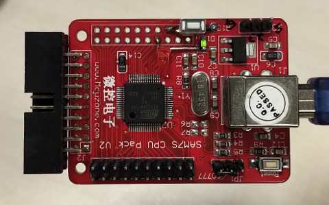
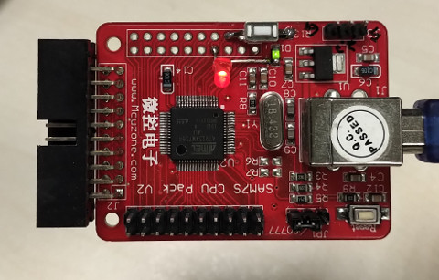

AT91SAM7S64 >> Assembly
LED
參考資訊：
1. sam7s_samples
main.s
.global _start _start: mvn r0, #0x000000ff ands r0, pc bne skip mov r0, #0x00100000 bx r0 skip: ldr r0, =0xfffffd44 mov r1, #0x8000 str r1, [r0] ldr r0, =0xfffffc10 mov r1, #4 str r1, [r0] ldr r0, =0xfffff400 mov r1, #0x40000 str r1, [r0, #0x00] str r1, [r0, #0x10] top: str r1, [r0, #0x30] mov r2, #0x300 a: subs r2, r2, #1 bne a str r1, [r0, #0x34] mov r2, #0x300 b: subs r2, r2, #1 bne b b top hang: b hang
main.ld
MEMORY
{
ram : ORIGIN = 0x00200000, LENGTH = 16K
rom : ORIGIN = 0x00100000, LENGTH = 64K
}
SECTIONS
{
.text : { *(.text*) } > rom
.bss : { *(.bss*) } > ram
}
Makefile
all: main.bin main.o: main.s arm-none-eabi-as main.s -o main.o main.bin: main.o main.ld arm-none-eabi-ld main.o -T main.ld -o main.elf arm-none-eabi-objdump -D main.elf > main.list arm-none-eabi-objcopy main.elf main.bin -O binary clean: rm -f *.bin *.o *.elf *.list
完成

